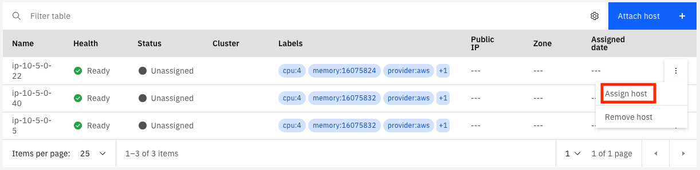

Assign Hosts
At this point you have created an IBM Satellite location and created some hosts in AWS that are attached to your location. In order to finish setting up your location we need to assign some hosts to the control plane. You will need at least three hosts, managed from three different zones in IBM Cloud. When you created the hosts, you provisioned them in different availability zones in AWS; when you assign each host to the control plane you will select a different IBM Cloud availiability zone to manage each of these hosts.
Let's get started!
To Assign hosts to your control plane:
-
Access your IBM Satellite location in IBM Cloud by using the
 icon and choose
icon and choose Satellite. On the Satellite landing page, click theLocationsitem on the left navigation menu. -
Click on your location in the list. It should automatically take you to the
Hostspage where you will see your EC2 instances. If you don't end up on theHostspage click on theHostslink in the left navigation menu.
Note
When you assign a host to the control plane you will want to have each host managed by a different availability zone in IBM Cloud. However, the IBM Cloud console does not know anything about your EC2 instances. You will have to manually decide which of your hosts should be managed by which zone in IBM Cloud.
The name of your hosts in the IBM console will probably be something like
ip-<an-ip-address>. That IP address is the private IP address of the host. In AWS the guest OS in your host does not know anything about public IP addresses; that's just how AWS networking works. If you want you can match up the host with the right EC2 instance by comparing the name of the host in IBM Cloud with the private IP address of your EC2 instance. -
Click on the three dots at the far right of the first line in the table of hosts. In the menu that pops up select
Assign host.
-
In the dialog that pops up there are two dropdown menus. The first one is for the cluster to which the host will be assigned. Right now only the
Control planeis avaiable; later, when you provision other IBM Services will show up on this list. In theZonefield, there is a list of all of the availability zones in the IBM Cloud MZR. Choose any of the three zones and clickAssign host.You wil see in the table of hosts that the status changes to
Assignedand theHealthchanges toProvisioning. -
Repeat the steps above for the other two hosts. Be sure to pick different zones for each one, and different than the first host.
Now we wait for the provisioning to finish. Click on the Overview link in the left navigation menu to go back to the overview page for your location. The Deployment message should now be R0023: Wait while Satellite sets up the location control plane. That message will change when the provisioning is complete.
Tip
IBM Satellite, like all services in IBM Cloud, does a certain amount of logging at the platform level. Now would be a create time to create an instance of IBM Log Analysis with LogDNA in the IBM Cloud region where your location is defined and enable it for Platform Logging in that region. You will be able to see logs from IBM Satellite as the provisioning progresses.
Note
At this time the message when provisioning is done will probably be an error having to do with DNS or routing or something. This is expected, according to the documentation; when the hosts were attached to the location the value for the public IP address was actually set to the private IP address. This is due to the way AWS does networking. We will need to run a command using the IBM Cloud CLI and the satellite plugin to register the public IP addresses for your control plane hosts with the subdomain that IBM created for your control plane.
-
When the provisioning is complete the deployment message changes to:
R0036: The location subdomains are not correctly routing traffic to your control plane hosts. Verify that the location subdomains are registered with the correct IP addresses for your control plane hosts with the 'ibmcloud sat location dns' commands. For more information, see 'http://ibm.biz/satloc-ts-subdomain'.Now it is time to update the DNS entry for your location with the public IP addresses of your control plane hosts.
-
Open a terminal on your computer and login to the IBM Cloud CLI. If you don't have the CLI installed you can find instructions here. Run this command to list your satellite locations:
ibmcloud sat location lsThe output will look like this:
Retrieving locations... OK Name ID Status Ready Created Hosts (used/total) Managed From Fairfax buukhi9w02ja0nlgvfg0 action required no 1 day ago 3 / 3 Washington D.C. Toronto butv8rdw0lre015nkteg normal yes 2 days ago 3 / 6 Washington D.C.To see the existing IP addresses registered for your location run this command:
ibmcloud sat location dns ls --location <location id or name>For example:
ibmcloud sat location dns ls --location Fairfax Retrieving location subdomains... OK Hostname Records Health Monitor SSL Cert Status SSL Cert Secret Name Secret Namespace f3dc29213e9fd2bee18b6-6b64a6ccc9c596bf59a86625d8fa2202-c000.us-east.satellite.appdomain.cloud 10.5.0.5,10.5.0.22,10.5.0.40 None creating f3dc29213e9fd2bee18b6-6b64a6ccc9c596bf59a86625d8fa2202-c000 default f3dc29213e9fd2bee18b6-6b64a6ccc9c596bf59a86625d8fa2202-c001.us-east.satellite.appdomain.cloud 10.5.0.5 None creating f3dc29213e9fd2bee18b6-6b64a6ccc9c596bf59a86625d8fa2202-c001 default f3dc29213e9fd2bee18b6-6b64a6ccc9c596bf59a86625d8fa2202-c002.us-east.satellite.appdomain.cloud 10.5.0.40 None creating f3dc29213e9fd2bee18b6-6b64a6ccc9c596bf59a86625d8fa2202-c002 default f3dc29213e9fd2bee18b6-6b64a6ccc9c596bf59a86625d8fa2202-c003.us-east.satellite.appdomain.cloud 10.5.0.22 None creating f3dc29213e9fd2bee18b6-6b64a6ccc9c596bf59a86625d8fa2202-c003 default f3dc29213e9fd2bee18b6-6b64a6ccc9c596bf59a86625d8fa2202-ce00.us-east.satellite.appdomain.cloud f3dc29213e9fd2bee18b6-6b64a6ccc9c596bf59a86625d8fa2202-c000.us-east.satellite.appdomain.cloud None creating f3dc29213e9fd2bee18b6-6b64a6ccc9c596bf59a86625d8fa2202-ce00 defaultYou can see that the IP addresses are all
10.5.x.x, which are the private IP addresses in my VPC.The command to register new IP addresses in DNS will look like this:
ibmcloud sat location dns register --location <location ID or Name> --ip <aws_host_public_ip> --ip <aws_host_public_ip> --ip <aws_host_public_ip>Each of the
<aws_host_public_ip>placeholders will contain the public IP address of one of your control plane hosts. You can get these IP addresses from theInstancesconsole of the EC2 Dashboard. -
Once you have updated the location DNS with the public IP addresses it's time to wait for the DNS updates to be propogated and for the location to recover from the error. If all goes well, in a few minutes the deployment message will change to:
R0001: the Satellite location is ready for operations.
Congratulations! Your location is up and running normally. Now it is time to add some more hosts to your location and provision other services, like OpenShift on IBM Cloud.